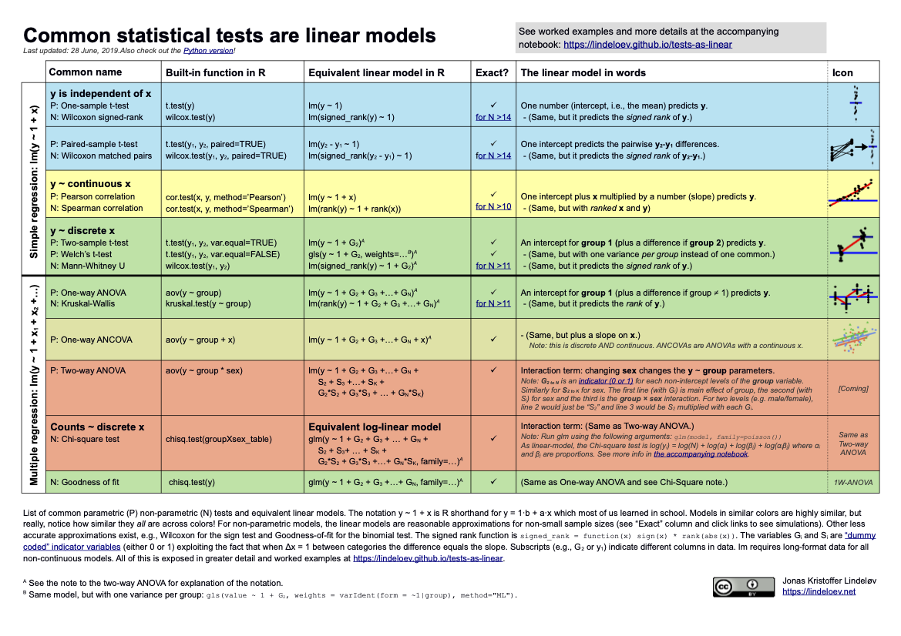
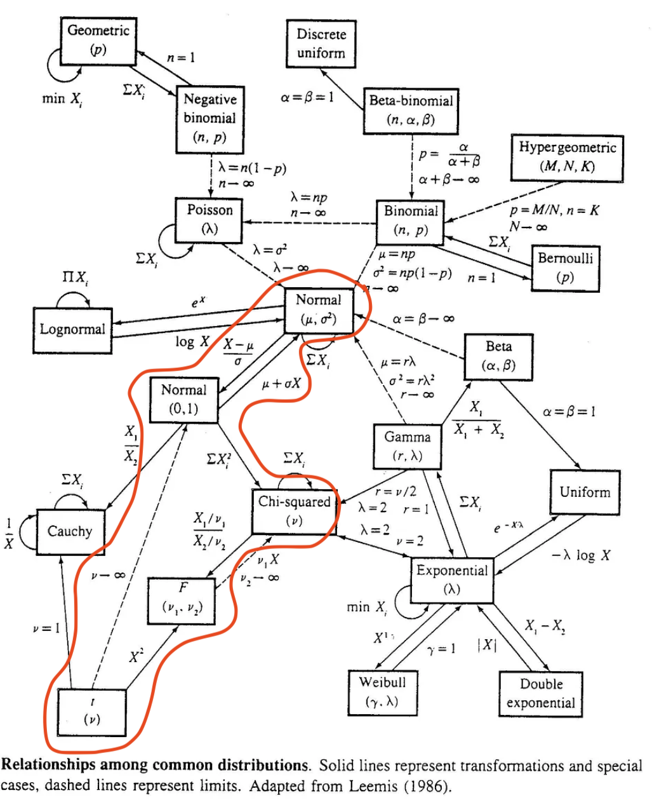

Week 1
Resources
Below is a table with links to resources. Icons in orange mean there is an available file link.
| Lesson | Topic | Slides | Annotated Slides | Recording(s) |
|---|---|---|---|---|
| Intro | ||||
| 1 | Review | |||
| 2 | Data Management |
For the slides, once they are opened, if you would like to print or save them as a PDF, the best way to do this is:
- Click on the icon with three horizontal bars on the bottom left of the browser.
- Click on “Tools” with the gear icon at the top of the sidebar.
- Click on “PDF Export Mode.”
- From there, you can print or save the PDF as you would normally from your internet browser.
- For example, in Chrome: I would click on the 3 vertical dots in the top right corner, then click Print, then change the Destination to “Save as PDF.”
- It doesn’t seem to work well in Safari… Let me know if you’re having trouble.
Announcements
Monday 1/8
- We came from two different sections of the same course
- While I am confident we all learned a lot and mostly the same material
- We definitely learned it in different ways
- Three components of 511/512/513
- Theory
- Application
- Coding
- There is a workshop on Friday, 1/12
- Data Equity Primer from We All Count
If you attend, I will give you an extra 3% on your project report.- Unfortunately, I was in contact with the workshop, but they cannot offer free seats to the whole class.
- I am attending, and will try to see if I can share a recording afterwards!
- Here are a few resources if you’d like to practice R:
- https://rladiessydney.org/courses/ryouwithme/
- https://r-bootcamp.netlify.app/
- This is step by step, and lets you practice your code in real time
- We will use
ggplot2,dplyr, andtidyrextensively in this class! - I am happy to help with coding, but during our class time our focus will by statistics topics
- Coding help will mostly be done outside of class time
- We will also be using an attachment within Rstudio called Quarto
- Here is a great tutorial on Quarto: https://quarto.org/docs/get-started/hello/rstudio.html
- Mine is the Quarto queen!
- There is some expectation of knowledge with the above packages (
ggplot2,dplyr, andtidyr)
- Here is a great tutorial on Quarto: https://quarto.org/docs/get-started/hello/rstudio.html
Wednesday 1/10
- Aha! I finally found the fun source on connecting tests from 511 to linear models!!
- Here is the site
- And here is the cheat sheet: 
- Website updates
- Please see the muddiest points below
- I try to elaborate/answer questions from your exit tickets
- Schedule updated to include Holidays
- New resources tab that I will try to update after every class!
- Please see the muddiest points below
- Asking about getting a different room - seems like we’re cramped
- Lab grading
- Each lab will be graded using a rubric (on each lab page)
- You will need to hit specific points to get full credit for the lab
- This is not a “turn in as is” assignment. You need to turn it in on time OR ask me for an extension.
- It is likely that I can give you a few more days to finish
- For labs, you will have ONE no-questions-asked, 3-day extension. Please use this wisely! You just need to send me a quick email saying “I am using my no-questions-asked extension for Lab __.”
- If you need another extension, then you need to email me to ask
On the Horizon
Class Exit Tickets
Additional Information
As we start the course, here are some administrative items that we need to do:
- Please join the Slack page
- Please read the syllabus on your own time
Muddiest Points
1. Relationship between distributions
Just to clarify! We will be using the distributions in the context of hypothesis testing. I just wanted you to see some of the cool connections between the distributions. (We don’t need to know the connections for a lot of what we do in this class.)
Also, I will discuss each distribution again as we hit the hypothesis tests that use them!
There is a big, scary (but fun!) infographic at the end of a famous stat textbook (Casella and Berger) that shows all the connections between distributions:

We mostly talk about the red, circled area. Each line with the directional arrow represents a specific transformation that is needed to go from the starting distribution to the distribution at the end of the arrow.
Again, this is NOT information we need to perform regression, but it is really interesting to see the connections between these distributions.
2. A word about the distributions
I feel like I might’ve scared us with all the distribution talk.
I want to be clear: We will further discuss and explore the distributions as we use them within the course. It will be more important to understand their use within regression then knowing the distribution in depth. Basically, when we implement specific hypothesis tests, we just need to know which distribution is most appropriate for the test.
3. Is the F distribution used for things outside of ANOVA?
Yes! In regression, we often use the F-distribution through the F-test (same as ANOVA) However, in regression, we are comparing the variance of two models, that may differ by a coefficient. See the STAT 501 page for more info if interested. In ANOVA, we are comparing variance between and within groups. Both use the same test, but with different goals!
4. Multivariable vs multivariate?
Some people misuse “multivariate” instead of “multivariable” modeling. In this class, we will only look at multivariable regression. Here’s the big difference:
- Multivariable: model with multiple independent variables (covariates, predictors)
- If we want to see how our outcome (height) is related to parent height, birth country, sex assigned at birth, etc.
- Multivariate: model with multiple dependent variables (outcome)
- If we want to extend the outcome from height to height and head circumference. Multivariate modeling would try to model both outcomes together and see how they are related to other variables.
5. More on the functions and problems we had in class!
This section has some examples from this YouTube video series. There is a video on mutate, pipe, filter, select, rename, arrange, and summarize. Note that some of the function in the series is outdated. The use of if_else() in the video is outdated, and it is more common to use case_when() now. The use of gather and spread have been replaced by pivot_longer and pivot_wider.
To discuss these functions below, I want to use a different dataset than what we used for examples in class. I’m hoping this allows us to see each function from a different angle. I’ll use the dataset that we used for some of the ggplot examples: mtcars. Let’s load the tidyverse and take a look at the dataset:
library(tidyverse)
glimpse(mtcars)Rows: 32
Columns: 11
$ mpg <dbl> 21.0, 21.0, 22.8, 21.4, 18.7, 18.1, 14.3, 24.4, 22.8, 19.2, 17.8,…
$ cyl <dbl> 6, 6, 4, 6, 8, 6, 8, 4, 4, 6, 6, 8, 8, 8, 8, 8, 8, 4, 4, 4, 4, 8,…
$ disp <dbl> 160.0, 160.0, 108.0, 258.0, 360.0, 225.0, 360.0, 146.7, 140.8, 16…
$ hp <dbl> 110, 110, 93, 110, 175, 105, 245, 62, 95, 123, 123, 180, 180, 180…
$ drat <dbl> 3.90, 3.90, 3.85, 3.08, 3.15, 2.76, 3.21, 3.69, 3.92, 3.92, 3.92,…
$ wt <dbl> 2.620, 2.875, 2.320, 3.215, 3.440, 3.460, 3.570, 3.190, 3.150, 3.…
$ qsec <dbl> 16.46, 17.02, 18.61, 19.44, 17.02, 20.22, 15.84, 20.00, 22.90, 18…
$ vs <dbl> 0, 0, 1, 1, 0, 1, 0, 1, 1, 1, 1, 0, 0, 0, 0, 0, 0, 1, 1, 1, 1, 0,…
$ am <dbl> 1, 1, 1, 0, 0, 0, 0, 0, 0, 0, 0, 0, 0, 0, 0, 0, 0, 1, 1, 1, 0, 0,…
$ gear <dbl> 4, 4, 4, 3, 3, 3, 3, 4, 4, 4, 4, 3, 3, 3, 3, 3, 3, 4, 4, 4, 3, 3,…
$ carb <dbl> 4, 4, 1, 1, 2, 1, 4, 2, 2, 4, 4, 3, 3, 3, 4, 4, 4, 1, 2, 1, 1, 2,…mutate()
For mutate, there are a few common uses:
create another numeric variable by manipulating other variables
create a categorical variable by creating cases from other variables
Create another numeric variable by manipulating other variables
The wt variable is the weight of the car in tons. Let’s say we want the full weight in pounds (lbs). I’ll create a new variable that is 1000 times (1 ton = 1000 lbs) the weight in the dataset.
mtcars1 = mtcars %>%
mutate(weight_lb = wt * 1000)
glimpse(mtcars1)Rows: 32
Columns: 12
$ mpg <dbl> 21.0, 21.0, 22.8, 21.4, 18.7, 18.1, 14.3, 24.4, 22.8, 19.2, …
$ cyl <dbl> 6, 6, 4, 6, 8, 6, 8, 4, 4, 6, 6, 8, 8, 8, 8, 8, 8, 4, 4, 4, …
$ disp <dbl> 160.0, 160.0, 108.0, 258.0, 360.0, 225.0, 360.0, 146.7, 140.…
$ hp <dbl> 110, 110, 93, 110, 175, 105, 245, 62, 95, 123, 123, 180, 180…
$ drat <dbl> 3.90, 3.90, 3.85, 3.08, 3.15, 2.76, 3.21, 3.69, 3.92, 3.92, …
$ wt <dbl> 2.620, 2.875, 2.320, 3.215, 3.440, 3.460, 3.570, 3.190, 3.15…
$ qsec <dbl> 16.46, 17.02, 18.61, 19.44, 17.02, 20.22, 15.84, 20.00, 22.9…
$ vs <dbl> 0, 0, 1, 1, 0, 1, 0, 1, 1, 1, 1, 0, 0, 0, 0, 0, 0, 1, 1, 1, …
$ am <dbl> 1, 1, 1, 0, 0, 0, 0, 0, 0, 0, 0, 0, 0, 0, 0, 0, 0, 1, 1, 1, …
$ gear <dbl> 4, 4, 4, 3, 3, 3, 3, 4, 4, 4, 4, 3, 3, 3, 3, 3, 3, 4, 4, 4, …
$ carb <dbl> 4, 4, 1, 1, 2, 1, 4, 2, 2, 4, 4, 3, 3, 3, 4, 4, 4, 1, 2, 1, …
$ weight_lb <dbl> 2620, 2875, 2320, 3215, 3440, 3460, 3570, 3190, 3150, 3440, …We can also perform several mutations at the same time. Let’s say we want the weight in pounds AND the horse power per cylinder (hp per cyl). We can perform both manipulations:
mtcars2 = mtcars %>%
mutate(weight_lb = wt * 1000,
hp_per_cyl = hp/cyl)
glimpse(mtcars2)Rows: 32
Columns: 13
$ mpg <dbl> 21.0, 21.0, 22.8, 21.4, 18.7, 18.1, 14.3, 24.4, 22.8, 19.2,…
$ cyl <dbl> 6, 6, 4, 6, 8, 6, 8, 4, 4, 6, 6, 8, 8, 8, 8, 8, 8, 4, 4, 4,…
$ disp <dbl> 160.0, 160.0, 108.0, 258.0, 360.0, 225.0, 360.0, 146.7, 140…
$ hp <dbl> 110, 110, 93, 110, 175, 105, 245, 62, 95, 123, 123, 180, 18…
$ drat <dbl> 3.90, 3.90, 3.85, 3.08, 3.15, 2.76, 3.21, 3.69, 3.92, 3.92,…
$ wt <dbl> 2.620, 2.875, 2.320, 3.215, 3.440, 3.460, 3.570, 3.190, 3.1…
$ qsec <dbl> 16.46, 17.02, 18.61, 19.44, 17.02, 20.22, 15.84, 20.00, 22.…
$ vs <dbl> 0, 0, 1, 1, 0, 1, 0, 1, 1, 1, 1, 0, 0, 0, 0, 0, 0, 1, 1, 1,…
$ am <dbl> 1, 1, 1, 0, 0, 0, 0, 0, 0, 0, 0, 0, 0, 0, 0, 0, 0, 1, 1, 1,…
$ gear <dbl> 4, 4, 4, 3, 3, 3, 3, 4, 4, 4, 4, 3, 3, 3, 3, 3, 3, 4, 4, 4,…
$ carb <dbl> 4, 4, 1, 1, 2, 1, 4, 2, 2, 4, 4, 3, 3, 3, 4, 4, 4, 1, 2, 1,…
$ weight_lb <dbl> 2620, 2875, 2320, 3215, 3440, 3460, 3570, 3190, 3150, 3440,…
$ hp_per_cyl <dbl> 18.33333, 18.33333, 23.25000, 18.33333, 21.87500, 17.50000,…You can even use the same syntax if you need to change a variable that depends on a previous mutation. Let’s say I want the ratio of weight in pounds to the car’s horse power.
mtcars3 = mtcars %>%
mutate(weight_lb = wt * 1000,
w_to_hp = weight_lb / hp)
glimpse(mtcars3)Rows: 32
Columns: 13
$ mpg <dbl> 21.0, 21.0, 22.8, 21.4, 18.7, 18.1, 14.3, 24.4, 22.8, 19.2, …
$ cyl <dbl> 6, 6, 4, 6, 8, 6, 8, 4, 4, 6, 6, 8, 8, 8, 8, 8, 8, 4, 4, 4, …
$ disp <dbl> 160.0, 160.0, 108.0, 258.0, 360.0, 225.0, 360.0, 146.7, 140.…
$ hp <dbl> 110, 110, 93, 110, 175, 105, 245, 62, 95, 123, 123, 180, 180…
$ drat <dbl> 3.90, 3.90, 3.85, 3.08, 3.15, 2.76, 3.21, 3.69, 3.92, 3.92, …
$ wt <dbl> 2.620, 2.875, 2.320, 3.215, 3.440, 3.460, 3.570, 3.190, 3.15…
$ qsec <dbl> 16.46, 17.02, 18.61, 19.44, 17.02, 20.22, 15.84, 20.00, 22.9…
$ vs <dbl> 0, 0, 1, 1, 0, 1, 0, 1, 1, 1, 1, 0, 0, 0, 0, 0, 0, 1, 1, 1, …
$ am <dbl> 1, 1, 1, 0, 0, 0, 0, 0, 0, 0, 0, 0, 0, 0, 0, 0, 0, 1, 1, 1, …
$ gear <dbl> 4, 4, 4, 3, 3, 3, 3, 4, 4, 4, 4, 3, 3, 3, 3, 3, 3, 4, 4, 4, …
$ carb <dbl> 4, 4, 1, 1, 2, 1, 4, 2, 2, 4, 4, 3, 3, 3, 4, 4, 4, 1, 2, 1, …
$ weight_lb <dbl> 2620, 2875, 2320, 3215, 3440, 3460, 3570, 3190, 3150, 3440, …
$ w_to_hp <dbl> 23.81818, 26.13636, 24.94624, 29.22727, 19.65714, 32.95238, …Create a categorical variable by creating cases from other variables
Recall in class we used mutate to label the numeric values of am to a categorical variable transmission. We create a new categorical variable from a binary, numeric variable.
mtcars4 = mtcars %>%
mutate(transmission = case_when(am == 0 ~ "automatic",
am == 1 ~ "manual"))
glimpse(mtcars4)Rows: 32
Columns: 12
$ mpg <dbl> 21.0, 21.0, 22.8, 21.4, 18.7, 18.1, 14.3, 24.4, 22.8, 19.…
$ cyl <dbl> 6, 6, 4, 6, 8, 6, 8, 4, 4, 6, 6, 8, 8, 8, 8, 8, 8, 4, 4, …
$ disp <dbl> 160.0, 160.0, 108.0, 258.0, 360.0, 225.0, 360.0, 146.7, 1…
$ hp <dbl> 110, 110, 93, 110, 175, 105, 245, 62, 95, 123, 123, 180, …
$ drat <dbl> 3.90, 3.90, 3.85, 3.08, 3.15, 2.76, 3.21, 3.69, 3.92, 3.9…
$ wt <dbl> 2.620, 2.875, 2.320, 3.215, 3.440, 3.460, 3.570, 3.190, 3…
$ qsec <dbl> 16.46, 17.02, 18.61, 19.44, 17.02, 20.22, 15.84, 20.00, 2…
$ vs <dbl> 0, 0, 1, 1, 0, 1, 0, 1, 1, 1, 1, 0, 0, 0, 0, 0, 0, 1, 1, …
$ am <dbl> 1, 1, 1, 0, 0, 0, 0, 0, 0, 0, 0, 0, 0, 0, 0, 0, 0, 1, 1, …
$ gear <dbl> 4, 4, 4, 3, 3, 3, 3, 4, 4, 4, 4, 3, 3, 3, 3, 3, 3, 4, 4, …
$ carb <dbl> 4, 4, 1, 1, 2, 1, 4, 2, 2, 4, 4, 3, 3, 3, 4, 4, 4, 1, 2, …
$ transmission <chr> "manual", "manual", "manual", "automatic", "automatic", "…We can also create a categorical variable from a continuous numeric variable. Let’s say we want to divide the miles per gallon into three categories: low, medium, and high. We can use mutate() and case_when() to do so:
mtcars5 = mtcars %>%
mutate(mpg_cat = case_when(mpg > 22 ~ "high",
mpg > 15 ~ "medium",
.default = "low"))
glimpse(mtcars5)Rows: 32
Columns: 12
$ mpg <dbl> 21.0, 21.0, 22.8, 21.4, 18.7, 18.1, 14.3, 24.4, 22.8, 19.2, 17…
$ cyl <dbl> 6, 6, 4, 6, 8, 6, 8, 4, 4, 6, 6, 8, 8, 8, 8, 8, 8, 4, 4, 4, 4,…
$ disp <dbl> 160.0, 160.0, 108.0, 258.0, 360.0, 225.0, 360.0, 146.7, 140.8,…
$ hp <dbl> 110, 110, 93, 110, 175, 105, 245, 62, 95, 123, 123, 180, 180, …
$ drat <dbl> 3.90, 3.90, 3.85, 3.08, 3.15, 2.76, 3.21, 3.69, 3.92, 3.92, 3.…
$ wt <dbl> 2.620, 2.875, 2.320, 3.215, 3.440, 3.460, 3.570, 3.190, 3.150,…
$ qsec <dbl> 16.46, 17.02, 18.61, 19.44, 17.02, 20.22, 15.84, 20.00, 22.90,…
$ vs <dbl> 0, 0, 1, 1, 0, 1, 0, 1, 1, 1, 1, 0, 0, 0, 0, 0, 0, 1, 1, 1, 1,…
$ am <dbl> 1, 1, 1, 0, 0, 0, 0, 0, 0, 0, 0, 0, 0, 0, 0, 0, 0, 1, 1, 1, 0,…
$ gear <dbl> 4, 4, 4, 3, 3, 3, 3, 4, 4, 4, 4, 3, 3, 3, 3, 3, 3, 4, 4, 4, 3,…
$ carb <dbl> 4, 4, 1, 1, 2, 1, 4, 2, 2, 4, 4, 3, 3, 3, 4, 4, 4, 1, 2, 1, 1,…
$ mpg_cat <chr> "medium", "medium", "high", "medium", "medium", "medium", "low…Notice that I used .default in the last case. This means “for all other values of mpg, assign it to ‘low’.”
pipe %>%
Check out the videos explanation! I can’t explain it much better!!
select() everything but a certain variable
It seems like we’re mostly okay with the select() function, but want more information on selecting everything but a certain varaible.
When we select variables, we have the option to identify variables we want to keep or remove. If we want to keep a variable, we would just list the variable’s column name. If we want to remove a variable, we use the minus sign to let R know that we do NOT want that variable. We typically do not tell R to remove and keep variables within the same select() function. Let’s recall the variables within the original mtcars dataset:
glimpse(mtcars)Rows: 32
Columns: 11
$ mpg <dbl> 21.0, 21.0, 22.8, 21.4, 18.7, 18.1, 14.3, 24.4, 22.8, 19.2, 17.8,…
$ cyl <dbl> 6, 6, 4, 6, 8, 6, 8, 4, 4, 6, 6, 8, 8, 8, 8, 8, 8, 4, 4, 4, 4, 8,…
$ disp <dbl> 160.0, 160.0, 108.0, 258.0, 360.0, 225.0, 360.0, 146.7, 140.8, 16…
$ hp <dbl> 110, 110, 93, 110, 175, 105, 245, 62, 95, 123, 123, 180, 180, 180…
$ drat <dbl> 3.90, 3.90, 3.85, 3.08, 3.15, 2.76, 3.21, 3.69, 3.92, 3.92, 3.92,…
$ wt <dbl> 2.620, 2.875, 2.320, 3.215, 3.440, 3.460, 3.570, 3.190, 3.150, 3.…
$ qsec <dbl> 16.46, 17.02, 18.61, 19.44, 17.02, 20.22, 15.84, 20.00, 22.90, 18…
$ vs <dbl> 0, 0, 1, 1, 0, 1, 0, 1, 1, 1, 1, 0, 0, 0, 0, 0, 0, 1, 1, 1, 1, 0,…
$ am <dbl> 1, 1, 1, 0, 0, 0, 0, 0, 0, 0, 0, 0, 0, 0, 0, 0, 0, 1, 1, 1, 0, 0,…
$ gear <dbl> 4, 4, 4, 3, 3, 3, 3, 4, 4, 4, 4, 3, 3, 3, 3, 3, 3, 4, 4, 4, 3, 3,…
$ carb <dbl> 4, 4, 1, 1, 2, 1, 4, 2, 2, 4, 4, 3, 3, 3, 4, 4, 4, 1, 2, 1, 1, 2,…Now we want to keep the following variables: cyl, mpg, disp, and qsec.
mtcars6 = mtcars %>%
select(mpg, cyl, disp, qsec)
glimpse(mtcars6)Rows: 32
Columns: 4
$ mpg <dbl> 21.0, 21.0, 22.8, 21.4, 18.7, 18.1, 14.3, 24.4, 22.8, 19.2, 17.8,…
$ cyl <dbl> 6, 6, 4, 6, 8, 6, 8, 4, 4, 6, 6, 8, 8, 8, 8, 8, 8, 4, 4, 4, 4, 8,…
$ disp <dbl> 160.0, 160.0, 108.0, 258.0, 360.0, 225.0, 360.0, 146.7, 140.8, 16…
$ qsec <dbl> 16.46, 17.02, 18.61, 19.44, 17.02, 20.22, 15.84, 20.00, 22.90, 18…In this case there was less typing to ID the variables we wanted to keep, so we inputted the column names. If we wanted to ID the variables we wanted to remove, what variables would identify to get the same remaining variables that are in mtcars6?
So we want to remove the following variables:
mtcars7 = mtcars %>%
select(-hp, -drat, -wt, -vs, -am, -gear, -carb)
glimpse(mtcars7)Rows: 32
Columns: 4
$ mpg <dbl> 21.0, 21.0, 22.8, 21.4, 18.7, 18.1, 14.3, 24.4, 22.8, 19.2, 17.8,…
$ cyl <dbl> 6, 6, 4, 6, 8, 6, 8, 4, 4, 6, 6, 8, 8, 8, 8, 8, 8, 4, 4, 4, 4, 8,…
$ disp <dbl> 160.0, 160.0, 108.0, 258.0, 360.0, 225.0, 360.0, 146.7, 140.8, 16…
$ qsec <dbl> 16.46, 17.02, 18.61, 19.44, 17.02, 20.22, 15.84, 20.00, 22.90, 18…So both get the job done, but one is definitely quicker to type!
When we are removing several variables, we can combine them into a vector to remove:
mtcars8 = mtcars %>%
select(-c(hp, drat, wt, vs, am, gear, carb))
glimpse(mtcars8)Rows: 32
Columns: 4
$ mpg <dbl> 21.0, 21.0, 22.8, 21.4, 18.7, 18.1, 14.3, 24.4, 22.8, 19.2, 17.8,…
$ cyl <dbl> 6, 6, 4, 6, 8, 6, 8, 4, 4, 6, 6, 8, 8, 8, 8, 8, 8, 4, 4, 4, 4, 8,…
$ disp <dbl> 160.0, 160.0, 108.0, 258.0, 360.0, 225.0, 360.0, 146.7, 140.8, 16…
$ qsec <dbl> 16.46, 17.02, 18.61, 19.44, 17.02, 20.22, 15.84, 20.00, 22.90, 18…The vector above is: c(hp, drat, wt, vs, am, gear, carb) and the minus sign in front of the vector will be applied to each variable.
pivot_longer()
I want to address the function with the faculty dataset from class.
# Note, I've put the data in a folder "data" that is in the same folder as this page's file
staff = read_csv("data/instructional-staff.csv")
staff# A tibble: 5 × 12
faculty_type `1975` `1989` `1993` `1995` `1999` `2001` `2003` `2005` `2007`
<chr> <dbl> <dbl> <dbl> <dbl> <dbl> <dbl> <dbl> <dbl> <dbl>
1 Full-Time Tenu… 29 27.6 25 24.8 21.8 20.3 19.3 17.8 17.2
2 Full-Time Tenu… 16.1 11.4 10.2 9.6 8.9 9.2 8.8 8.2 8
3 Full-Time Non-… 10.3 14.1 13.6 13.6 15.2 15.5 15 14.8 14.9
4 Part-Time Facu… 24 30.4 33.1 33.2 35.5 36 37 39.3 40.5
5 Graduate Stude… 20.5 16.5 18.1 18.8 18.7 19 20 19.9 19.5
# ℹ 2 more variables: `2009` <dbl>, `2011` <dbl>Note that I am not using glimpse() here because we only have 5 rows corresponding to the faculty type. What would a glimpse of the data look like?
glimpse(staff)Rows: 5
Columns: 12
$ faculty_type <chr> "Full-Time Tenured Faculty", "Full-Time Tenure-Track Facu…
$ `1975` <dbl> 29.0, 16.1, 10.3, 24.0, 20.5
$ `1989` <dbl> 27.6, 11.4, 14.1, 30.4, 16.5
$ `1993` <dbl> 25.0, 10.2, 13.6, 33.1, 18.1
$ `1995` <dbl> 24.8, 9.6, 13.6, 33.2, 18.8
$ `1999` <dbl> 21.8, 8.9, 15.2, 35.5, 18.7
$ `2001` <dbl> 20.3, 9.2, 15.5, 36.0, 19.0
$ `2003` <dbl> 19.3, 8.8, 15.0, 37.0, 20.0
$ `2005` <dbl> 17.8, 8.2, 14.8, 39.3, 19.9
$ `2007` <dbl> 17.2, 8.0, 14.9, 40.5, 19.5
$ `2009` <dbl> 16.8, 7.6, 15.1, 41.1, 19.4
$ `2011` <dbl> 16.7, 7.4, 15.4, 41.3, 19.3Both views are indicators that the dataset is in a “wide” format where each year has its own column. We want our data to be in a tidy format, which means each column is a variable and each cell has a value. However, the years are actually values for a variable “year.” By using pivot_longer(), we can tell R to take those columns for years and make them their own column where year is the value. That means for a year like 1975, there are five numbers corresponding to the five faculty types. Those five numbers are the percentage of the specific faculty type in that year. So we want to end with columns: faculty type, year, and percentage.
To start with an easier implementation of pivot_longer(), let’s remove the faculty type using select()
staff2 = staff %>%
select(-faculty_type)
staff2# A tibble: 5 × 11
`1975` `1989` `1993` `1995` `1999` `2001` `2003` `2005` `2007` `2009` `2011`
<dbl> <dbl> <dbl> <dbl> <dbl> <dbl> <dbl> <dbl> <dbl> <dbl> <dbl>
1 29 27.6 25 24.8 21.8 20.3 19.3 17.8 17.2 16.8 16.7
2 16.1 11.4 10.2 9.6 8.9 9.2 8.8 8.2 8 7.6 7.4
3 10.3 14.1 13.6 13.6 15.2 15.5 15 14.8 14.9 15.1 15.4
4 24 30.4 33.1 33.2 35.5 36 37 39.3 40.5 41.1 41.3
5 20.5 16.5 18.1 18.8 18.7 19 20 19.9 19.5 19.4 19.3Now we can pivot the years! We first identify the columns that we want to pivot. To pivot all the columns, we say cols = everything(). pivot_longer() knows you want the column names to now become values of a variable, but it does not know what to call that variable. So now we identify the new variable name of the column that will contain all the years (our old column names). We identify the new variable name with: names_to. Finally, we need to adress the old cell values that were under each year in our wide dataset. Those cell values will make up a new column/variable. Remember that each year had 5 values underneath it, so we need to include all 55 cell values. Similar to names_to, we need to identify the new column names for all those values. We use values_to to identify the column name for the cell values of our old wide formatted data.
staff_long = staff2 %>%
pivot_longer(
cols = everything(), # columns to pivot
names_to = "year", # name of new column for variable names
values_to = "percentage" # name of new column for values
) %>%
mutate(percentage = as.numeric(percentage))
head(staff_long, 20) # I'm asking R to show me the first 20 rows# A tibble: 20 × 2
year percentage
<chr> <dbl>
1 1975 29
2 1989 27.6
3 1993 25
4 1995 24.8
5 1999 21.8
6 2001 20.3
7 2003 19.3
8 2005 17.8
9 2007 17.2
10 2009 16.8
11 2011 16.7
12 1975 16.1
13 1989 11.4
14 1993 10.2
15 1995 9.6
16 1999 8.9
17 2001 9.2
18 2003 8.8
19 2005 8.2
20 2007 8 I included the first 20 rows so we could see that the years repeat. This is because there were 5 percentages for each year. While this is in the desired long format, we now see that we’re missing the information on faculty type. Each percentage in each year corresponded to a specific faculty type:
staff_long %>% filter(year == 1975)# A tibble: 5 × 2
year percentage
<chr> <dbl>
1 1975 29
2 1975 16.1
3 1975 10.3
4 1975 24
5 1975 20.5Which percentage is for which faculty??
We could use another function called join() to try to remedy the situation, but it’s much easier to redo the pivot function. We will go back to staff which still has the faculty type:
staff# A tibble: 5 × 12
faculty_type `1975` `1989` `1993` `1995` `1999` `2001` `2003` `2005` `2007`
<chr> <dbl> <dbl> <dbl> <dbl> <dbl> <dbl> <dbl> <dbl> <dbl>
1 Full-Time Tenu… 29 27.6 25 24.8 21.8 20.3 19.3 17.8 17.2
2 Full-Time Tenu… 16.1 11.4 10.2 9.6 8.9 9.2 8.8 8.2 8
3 Full-Time Non-… 10.3 14.1 13.6 13.6 15.2 15.5 15 14.8 14.9
4 Part-Time Facu… 24 30.4 33.1 33.2 35.5 36 37 39.3 40.5
5 Graduate Stude… 20.5 16.5 18.1 18.8 18.7 19 20 19.9 19.5
# ℹ 2 more variables: `2009` <dbl>, `2011` <dbl>Now we can implement pivot_longer(). We will identify the columns we want to pivot as column 2 through 12 so we exclude the faculty type from the pivoting. BUT the really nice thing is that pivot_longer() will remember the percentages that correspond to a specific combination of faculty type and year! Let’s try it again:
staff_long2 = staff %>%
pivot_longer(
cols = 2:12, # columns to pivot
names_to = "year", # name of new column for variable names
values_to = "percentage" # name of new column for values
) %>%
mutate(percentage = as.numeric(percentage))
head(staff_long2, 20) # I'm asking R to show me the first 20 rows# A tibble: 20 × 3
faculty_type year percentage
<chr> <chr> <dbl>
1 Full-Time Tenured Faculty 1975 29
2 Full-Time Tenured Faculty 1989 27.6
3 Full-Time Tenured Faculty 1993 25
4 Full-Time Tenured Faculty 1995 24.8
5 Full-Time Tenured Faculty 1999 21.8
6 Full-Time Tenured Faculty 2001 20.3
7 Full-Time Tenured Faculty 2003 19.3
8 Full-Time Tenured Faculty 2005 17.8
9 Full-Time Tenured Faculty 2007 17.2
10 Full-Time Tenured Faculty 2009 16.8
11 Full-Time Tenured Faculty 2011 16.7
12 Full-Time Tenure-Track Faculty 1975 16.1
13 Full-Time Tenure-Track Faculty 1989 11.4
14 Full-Time Tenure-Track Faculty 1993 10.2
15 Full-Time Tenure-Track Faculty 1995 9.6
16 Full-Time Tenure-Track Faculty 1999 8.9
17 Full-Time Tenure-Track Faculty 2001 9.2
18 Full-Time Tenure-Track Faculty 2003 8.8
19 Full-Time Tenure-Track Faculty 2005 8.2
20 Full-Time Tenure-Track Faculty 2007 8 And now I’ll just dump a couple other ways to identify the columns we want to pivot:
- In this one, we name the column years. It’s like 2:12, but it’s helpful when it’s hard to see what number the column is. Also, this is a special case because the columns are numbers, so we need to use ’ to wrap around the year. In the
mtcarsdataset, a similar approach would becyl:vsto select all the variables betweencylandvs. You can also make a vector of variable names if they are not next to each other.
staff_long3 = staff %>%
pivot_longer(
cols = '1975':'2011', # columns to pivot
names_to = "year", # name of new column for variable names
values_to = "percentage" # name of new column for values
) %>%
mutate(percentage = as.numeric(percentage))
head(staff_long3, 20) # I'm asking R to show me the first 20 rows# A tibble: 20 × 3
faculty_type year percentage
<chr> <chr> <dbl>
1 Full-Time Tenured Faculty 1975 29
2 Full-Time Tenured Faculty 1989 27.6
3 Full-Time Tenured Faculty 1993 25
4 Full-Time Tenured Faculty 1995 24.8
5 Full-Time Tenured Faculty 1999 21.8
6 Full-Time Tenured Faculty 2001 20.3
7 Full-Time Tenured Faculty 2003 19.3
8 Full-Time Tenured Faculty 2005 17.8
9 Full-Time Tenured Faculty 2007 17.2
10 Full-Time Tenured Faculty 2009 16.8
11 Full-Time Tenured Faculty 2011 16.7
12 Full-Time Tenure-Track Faculty 1975 16.1
13 Full-Time Tenure-Track Faculty 1989 11.4
14 Full-Time Tenure-Track Faculty 1993 10.2
15 Full-Time Tenure-Track Faculty 1995 9.6
16 Full-Time Tenure-Track Faculty 1999 8.9
17 Full-Time Tenure-Track Faculty 2001 9.2
18 Full-Time Tenure-Track Faculty 2003 8.8
19 Full-Time Tenure-Track Faculty 2005 8.2
20 Full-Time Tenure-Track Faculty 2007 8 - This one is the same as our in-class code. We “remove” faculty type from our identified columns
staff_long4 = staff %>%
pivot_longer(
cols = -faculty_type, # columns to pivot
names_to = "year", # name of new column for variable names
values_to = "percentage" # name of new column for values
) %>%
mutate(percentage = as.numeric(percentage))
head(staff_long4, 20) # I'm asking R to show me the first 20 rows# A tibble: 20 × 3
faculty_type year percentage
<chr> <chr> <dbl>
1 Full-Time Tenured Faculty 1975 29
2 Full-Time Tenured Faculty 1989 27.6
3 Full-Time Tenured Faculty 1993 25
4 Full-Time Tenured Faculty 1995 24.8
5 Full-Time Tenured Faculty 1999 21.8
6 Full-Time Tenured Faculty 2001 20.3
7 Full-Time Tenured Faculty 2003 19.3
8 Full-Time Tenured Faculty 2005 17.8
9 Full-Time Tenured Faculty 2007 17.2
10 Full-Time Tenured Faculty 2009 16.8
11 Full-Time Tenured Faculty 2011 16.7
12 Full-Time Tenure-Track Faculty 1975 16.1
13 Full-Time Tenure-Track Faculty 1989 11.4
14 Full-Time Tenure-Track Faculty 1993 10.2
15 Full-Time Tenure-Track Faculty 1995 9.6
16 Full-Time Tenure-Track Faculty 1999 8.9
17 Full-Time Tenure-Track Faculty 2001 9.2
18 Full-Time Tenure-Track Faculty 2003 8.8
19 Full-Time Tenure-Track Faculty 2005 8.2
20 Full-Time Tenure-Track Faculty 2007 8 across()
I really ran out of time before getting to this one. For now, you can look at the examples from this site to see the capabilities of across() . I invite you to try them out on the various datasets in our lecture.
6. tbl_summary(): Trying to figure out how to change the median values to mean
Oh, wow! Turns out we solved it in class, but I made big mistake with my slides. The code for the table was in two places, but we fixed the one that was NOT running and showing on the slide!
So turns out, it worked!!
Here’s the code:
library(tidyverse) ## Need to load to use selec() and %>%
library(gtsummary) ## Needed package for tbl_summary()
data("dds.discr")
dds.discr1 = dds.discr %>%
rename(SAB = gender,
R_E = ethnicity)
dds.discr1 %>%
select(-id, -age.cohort) %>%
tbl_summary(label = c(age ~ "Age",
R_E ~ "Race/Ethnicity",
SAB ~ "Sex Assigned at Birth",
expenditures ~ "Expenditures") ,
statistic = list(all_continuous() ~ "{mean} ({sd})"))| Characteristic | N = 1,0001 |
|---|---|
| Age | 23 (18) |
| Sex Assigned at Birth | |
| Female | 503 (50%) |
| Male | 497 (50%) |
| Expenditures | 18,066 (19,543) |
| Race/Ethnicity | |
| American Indian | 4 (0.4%) |
| Asian | 129 (13%) |
| Black | 59 (5.9%) |
| Hispanic | 376 (38%) |
| Multi Race | 26 (2.6%) |
| Native Hawaiian | 3 (0.3%) |
| Other | 2 (0.2%) |
| White not Hispanic | 401 (40%) |
| 1 Mean (SD); n (%) | |
6. Are there benefits to ggplot compared to the base R graphing functions?
The main benefit I see for ggplot is that the syntax and grammar of our coding in tidyr and dplyr is very similar to ggplot. Your effort in strengthening one will help with the others.
I am certainly not going to force you to use ggplot over base R. At the end of the day, it is really whatever makes the most sense to you. I will say: ggplot2 seems to be where most statisticians and epidemiologists are headed. And I really believe that ggplot is more efficient with coding.
Statistician of the Week: Regina Nuzzo

Dr. Nuzzo received her PhD in Statistics from Stanford University and is now Professor of Science, Technology, & Mathematics at Gallaudet University. Gallaudet University, federally funded and located in Washington, DC, is the only higher education institution where all programs are designed for the education of the deaf and hard of hearing. Dr. Nuzzo teaches statistics using American Sign Language.
She is the Senior Advisor for Statistics Communication and Media Innovation at the American Statistical Association and a freelance writer.
Topics covered
Dr. Nuzzo is a statistician and a science journalist. Her work has appeared in Nature, Los Angeles Times, New York Times, Reader’s Digest, New Scientist, and Scientific American. Most of her work is in the “Health” or “Science” sections of the aforementioned outlets. Primarily, she works to help lay-audiences understand science and statistics in particular. She earned the American Statistical Association’s 2014 Excellence in Statistical Reporting Award for her article on p-values in Nature. Her work led to the ASA’s statement on p-values.
Relevant work
- Nuzzo, R. “Scientific method: Statistical errors.” Nature 506, 150–152 (2014).
- Nuzzo, R. “Tips for Communicating Statistical Significance.” Science, Health, and Public Trust, National Institutes of Health, 2018.
- Nuzzo, R. “Vying for a soul mate? Psych out the competition with science.” Health: Features. Los Angeles Times, 2008.
Outside links
Please note the statisticians of the week are taken directly from the CURV project by Jo Hardin. I also invite you to check out this youtube video of her Women Rise Keynote address where she discusses her hearing impairment, career growth, and her work with p-values.